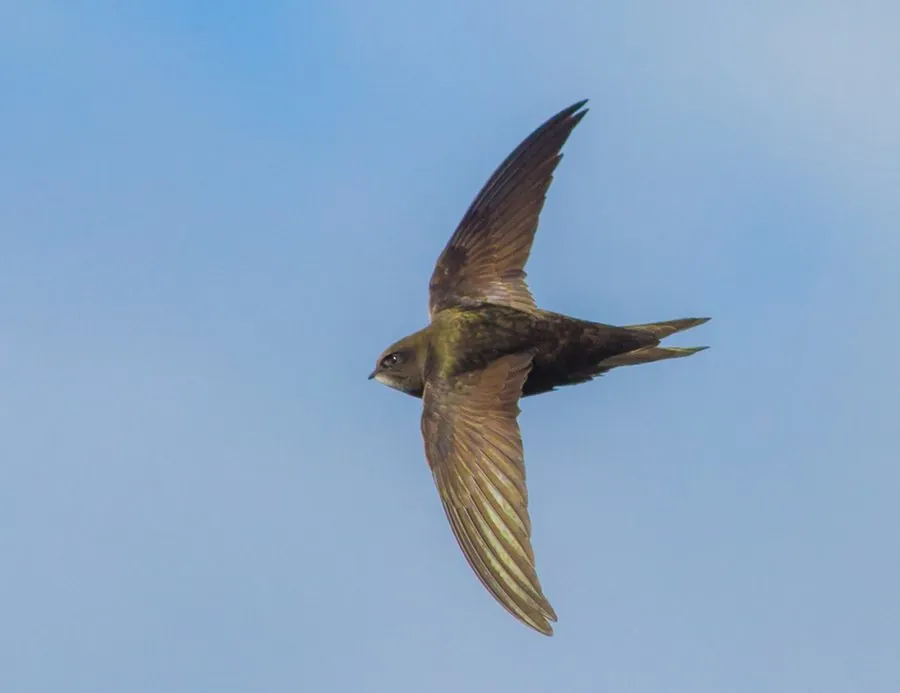

鸟类 · 动物界
普通雨燕 Apus apus

几乎一生都在空中度过的候鸟，翅膀细长如镰刀，飞行速度极快，能边飞边睡，北京城楼上的雨燕闻名已久。
- 分类
- 门脊索动物门纲鸟纲目雨燕目科雨燕科属雨燕属
- 栖息环境
- 城镇建筑、古建筑屋檐与崖壁缝隙，在开阔上空捕食飞虫
- 地理分布
- 繁殖于欧亚大陆和非洲西北部，越冬于非洲南部，中国北方有繁殖
- 保护级别
- IUCN 无危（LC）；中国“三有”保护动物
物种志
普通雨燕体长 16–18 cm，体重 35–50 g，翼展 40–48 cm。它的全身羽毛呈深灰褐色，喉部颜色较浅，翅膀细长而尖，呈镰刀状，尾巴呈叉状。它的脚十分短小，四个脚趾都朝前，适合攀附在墙壁上，却不适合在地面行走。
普通雨燕繁殖于欧亚大陆和非洲西北部，冬季南迁到非洲南部越冬，中国北方包括北京、河北、山西等地都有繁殖种群。它们几乎一生都在空中度过，飞行时捕食蚊、蝇、蚜虫等飞虫，也能边飞边睡觉。普通雨燕飞行速度极快，是飞行速度最快的鸟类之一。繁殖期在建筑物的缝隙、屋檐和城楼中筑巢，每窝产卵 2–3 枚，孵化约 19–20 天。北京城楼上的雨燕已成为城市生态的象征，目前被列为无危物种，中国将其列入“三有”保护名录。
形态与习性
- 食性蚊、蝇、蚜虫等空中飞虫
- 体长16–18 cm
- 体重35–50 g
- 翼展40–48 cm
- 繁殖每窝 2–3 枚卵，孵化约 19–20 天
- 寿命野外约 9–10 年
- 飞行几乎一生在空中度过，能边飞边睡觉
趣味知识
- 普通雨燕几乎一生都在空中度过，能边飞边睡觉、交配甚至换羽。
- 它的翅膀细长如镰刀，飞行速度极快。
- 北京城楼上的雨燕已成为城市生态的象征。
- 普通雨燕的脚短小，四个脚趾都朝前，适合攀附墙壁。